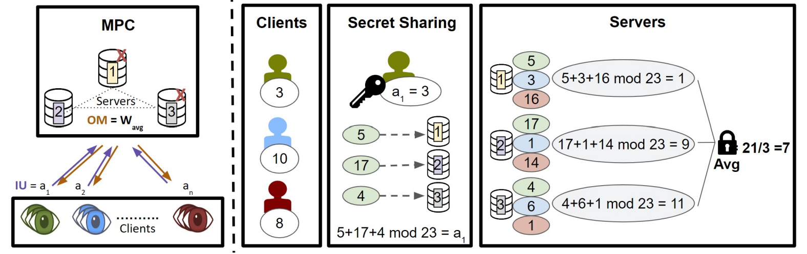

PrivatEyes: Appearance-based Gaze Estimation Using Federated Secure Multi-Party Computation
Mayar Elfares, Pascal Reisert, Zhiming Hu, Wenwu Tang, Ralf Küsters, Andreas Bulling
Proceedings of the ACM on Human-Computer Interaction (PACM HCI), 2024, 8(ETRA): 1-23.

Abstract
Latest gaze estimation methods require large-scale training data but their collection and exchange pose significant privacy risks. We propose PrivatEyes - the first privacy-enhancing training approach for appearance-based gaze estimation based on federated learning (FL) and secure multi-party computation (MPC). PrivatEyes enables training gaze estimators on multiple local datasets across different users and server-based secure aggregation of the individual estimators’ updates. PrivatEyes guarantees that individual gaze data remains private even if a majority of the aggregating servers is malicious. We also introduce a new data leakage attack DualView that shows that PrivatEyes limits the leakage of private training data more effectively than previous approaches. Evaluations on the MPIIGaze, MPIIFaceGaze, GazeCapture, and NVGaze datasets further show that the improved privacy does not lead to a lower gaze estimation accuracy or substantially higher computational costs - both of which are on par with its non-secure counterparts.Links
Paper: paper.pdf
BibTeX
@article{elfares24privateyes,
title = {PrivatEyes: Appearance-based Gaze Estimation Using Federated Secure Multi-Party Computation},
author = {Elfares, Mayar and Reisert, Pascal and Hu, Zhiming and Tang, Wenwu and Küsters, Ralf and Bulling, Andreas},
year = {2024},
journal = {Proceedings of the ACM on Human-Computer Interaction},
pages = {1--23},
volume = {8},
number = {ETRA}}